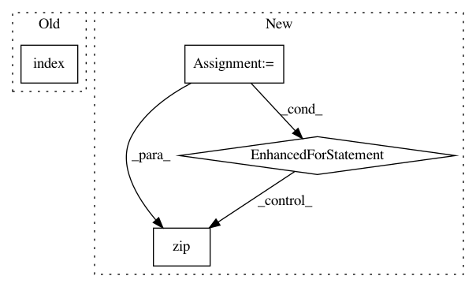

8e3239f05f48b10b63332662fc3f80e9fff1220d,hyperopt/vectorize.py,,idxs_map,#Any#Any#,34
Before Change
ERR("vals_j %s" % str(vals_j))
raise
try:
kwargs_nn = dict([(kw, vals_j[list(idxs_j).index(ii)])
for kw, (idxs_j, vals_j) in kwargs.items()])
except:
ERR("args_nn %s" % cmd)
After Change
for jj in idxs: assert jj in idxs_kw
args_imap = []
for idxs_j, vals_j in args:
if idxs_j:
args_imap.extend(dict(zip(idxs_j, vals_j)))
else:
args_imap.extend({})
kwargs_imap = {}
for kw, (idxs_j, vals_j) in kwargs.items():
if idxs_j:
kwargs_imap[kw] = dict(zip(idxs_j, vals_j))
In pattern: SUPERPATTERN
Frequency: 3
Non-data size: 4
Instances
Project Name: hyperopt/hyperopt
Commit Name: 8e3239f05f48b10b63332662fc3f80e9fff1220d
Time: 2012-03-01
Author: james.bergstra@gmail.com
File Name: hyperopt/vectorize.py
Class Name:
Method Name: idxs_map
Project Name: WZBSocialScienceCenter/tmtoolkit
Commit Name: 994004cca3b3153cc9c5b2d1ff0f6c4ba1b3cd13
Time: 2020-01-29
Author: markus.konrad@wzb.eu
File Name: tmtoolkit/preprocess/_preprocworker.py
Class Name: PreprocWorker
Method Name: _task_lemmatize
Project Name: sony/nnabla
Commit Name: 4fc50d001dbdba38962bf1f3967caf243d9b2152
Time: 2019-02-18
Author: Yukio.Oobuchi@sony.com
File Name: python/src/nnabla/utils/cli/train.py
Class Name:
Method Name: _evaluate